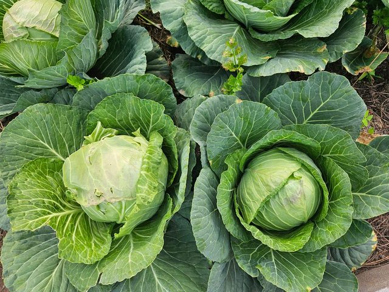
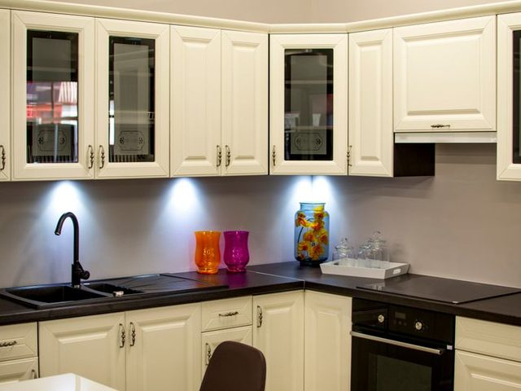
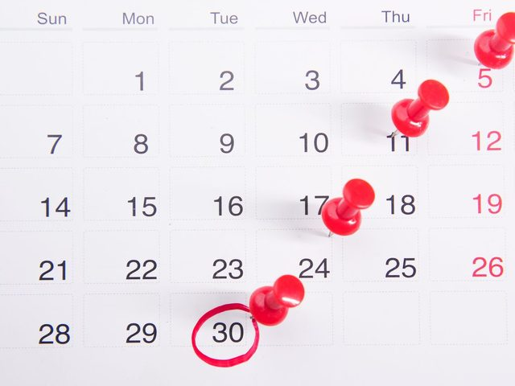
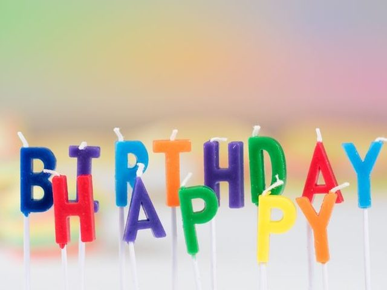
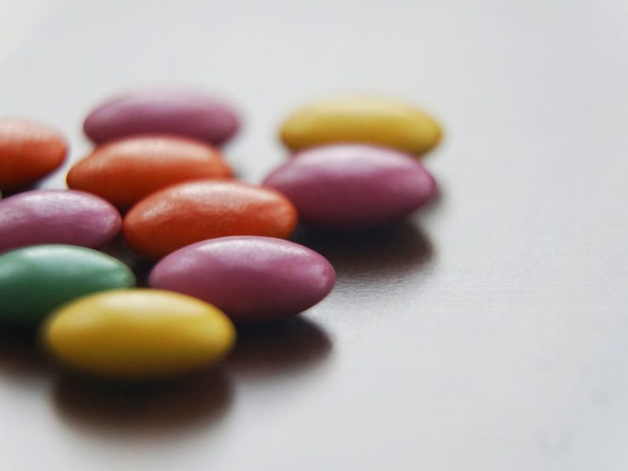
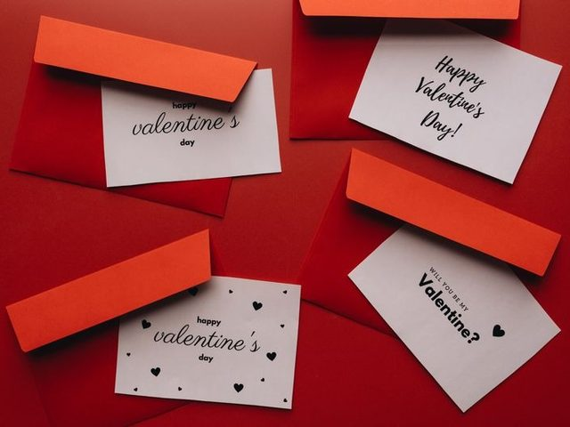
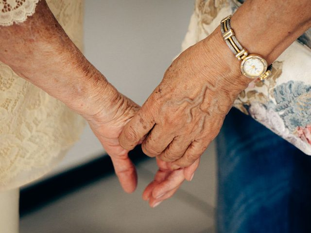
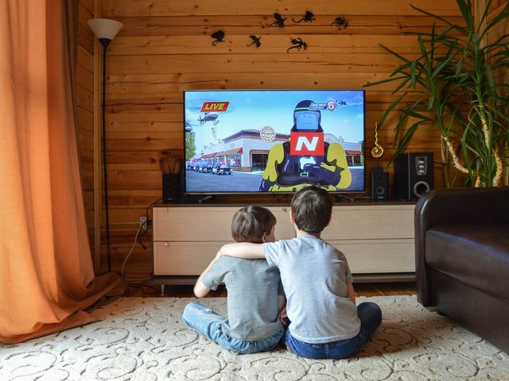

UNIT 8 · VOCABULARY
C 開頭（一）
C-I
38 個單字聽・唸・用
本單元單字一覽
WORD UP「C-I」的 38 個字（cabbage 到 cause）。紅色＝要複習，藍色標籤＝WORD UP 標熟記、還要在這裡考對。
cabbagecabinetcablecafeteriacagecakecalendarcallcalmcameracampcampuscanCanadaCanadiancancelcancercandlecandycapcaptaincarcardcarecareercarefulcarelesscarpetcarrotcarrycartooncasecashcassettecastlecatcatchcause
每個字都有 🔊，先聽發音、跟著唸，再看例句。
單字 1–4

cabbage
高麗菜n.
Grandma grows cabbage in her garden.
奶奶在菜園種高麗菜。
奶奶在菜園種高麗菜。

cabinet
櫥櫃n.
The cups are in the kitchen cabinet.
杯子在廚房的櫥櫃裡。
杯子在廚房的櫥櫃裡。

cable
電纜；纜線n.
We took a cable car up the mountain.
我們搭纜車上山。
我們搭纜車上山。

cafeteria
自助餐廳；學生餐廳n.
We eat lunch in the school cafeteria.
我們在學校餐廳吃午餐。
我們在學校餐廳吃午餐。
單字 5–8

cage
籠子n.
The bird is singing in its cage.
那隻鳥在籠子裡唱歌。
那隻鳥在籠子裡唱歌。

cake
蛋糕n.
This test is a piece of cake.
這個考試很簡單。
這個考試很簡單。

calendar
日曆n.
Mark the date on the calendar.
把日期標在日曆上。
把日期標在日曆上。

call
打電話；叫；稱呼v./n.
Please call me Ben.
請叫我 Ben。
請叫我 Ben。
單字 9–12
calm
冷靜的；使平靜adj./v.
Calm down and listen to me.
冷靜下來聽我說。
冷靜下來聽我說。
camera
相機n.
Don't forget to bring your camera.
別忘了帶相機。
別忘了帶相機。
camp
營地；露營n./v.
We went camping by the lake.
我們去湖邊露營。
我們去湖邊露營。

campus
校園n.
The college has a beautiful campus.
那所大學有漂亮的校園。
那所大學有漂亮的校園。
單字 13–16

can
能夠；罐頭aux./n.
Can you swim?
你會游泳嗎？
你會游泳嗎？
Canada
加拿大n.
Canada is very cold in winter.
加拿大冬天很冷。
加拿大冬天很冷。
🍁
Canadian
加拿大的；加拿大人adj./n.
My pen pal is Canadian.
我的筆友是加拿大人。
我的筆友是加拿大人。
❌
cancel
取消v.
The game was canceled because of the rain.
比賽因為下雨取消了。
比賽因為下雨取消了。
單字 17–20

cancer
癌症n.
Smoking can cause cancer.
抽菸會導致癌症。
抽菸會導致癌症。

candle
蠟燭n.
There are twelve candles on the cake.
蛋糕上有十二根蠟燭。
蛋糕上有十二根蠟燭。

candy
糖果n.
Too much candy is bad for your teeth.
吃太多糖果對牙齒不好。
吃太多糖果對牙齒不好。
cap
（無邊／有帽舌的）帽子n.
He wears a baseball cap.
他戴棒球帽。
他戴棒球帽。
單字 21–24

captain
隊長；船長；機長n.
Who is the captain of your team?
誰是你們隊的隊長？
誰是你們隊的隊長？
car
汽車n.
We went to Taichung by car.
我們開車去台中。
我們開車去台中。

card
卡片n.
I made a card for Mom.
我做了一張卡片給媽媽。
我做了一張卡片給媽媽。

care
在乎；照顧v./n.
I don't care what others think.
我不在乎別人怎麼想。
我不在乎別人怎麼想。
單字 25–28
🧑🔬
career
職業；生涯n.
She wants a career in science.
她想從事科學方面的工作。
她想從事科學方面的工作。

careful
小心的adj.
Be careful! The floor is wet.
小心！地板是濕的。
小心！地板是濕的。

careless
粗心的adj.
I made a careless mistake on the test.
我考試時犯了粗心的錯。
我考試時犯了粗心的錯。

carpet
地毯n.
The cat is sleeping on the carpet.
貓在地毯上睡覺。
貓在地毯上睡覺。
單字 29–32
carrot
紅蘿蔔n.
Rabbits like carrots.
兔子喜歡紅蘿蔔。
兔子喜歡紅蘿蔔。

carry
攜帶；搬v.
Can you help me carry this box?
你可以幫我搬這個箱子嗎？
你可以幫我搬這個箱子嗎？

cartoon
卡通；漫畫n.
My little sister loves cartoons.
我妹妹很愛看卡通。
我妹妹很愛看卡通。

case
情況；案件；盒子n.
In that case, we will stay home.
那樣的話，我們就待在家。
那樣的話，我們就待在家。
單字 33–36

cash
現金n.
Can I pay in cash?
我可以付現金嗎？
我可以付現金嗎？
cassette
卡帶；錄音帶n.
Grandpa still listens to cassettes.
爺爺還在聽卡帶。
爺爺還在聽卡帶。
castle
城堡n.
The princess lives in a castle.
公主住在城堡裡。
公主住在城堡裡。
cat
貓n.
Our cat likes to sleep in the sun.
我們的貓喜歡曬太陽睡覺。
我們的貓喜歡曬太陽睡覺。
單字 37–38

catch
抓住；趕上；感染v.
Hurry up! We can still catch the bus.
快點！我們還趕得上公車。
快點！我們還趕得上公車。
🌧️
cause
造成；原因v./n.
Heavy rain caused the flood.
大雨造成了水災。
大雨造成了水災。
常考片語
| 說法 | 中文 | 例子 |
|---|---|---|
| take care of | 照顧 | take care of my little brother |
| care about | 在乎、關心 | care about the earth |
| calm down | 冷靜下來 | Calm down, please. |
| go camping | 去露營 | go camping in the mountains |
| pay in cash | 付現金 | pay in cash at the store |
| a piece of cake | 小事一樁、很簡單 | The quiz was a piece of cake. |
catch a cold 感冒；catch the bus 趕上公車。
容易搞混的字
| 字 | 用法 | 例子 |
|---|---|---|
| careful / careless | 小心的 ／ 粗心的 | a careful driver ／ a careless mistake |
| cap / hat | 有帽舌或無邊的帽子 ／ 有一圈帽緣的帽子 | a baseball cap ／ a sun hat |
| Canada / Canadian | 加拿大 ／ 加拿大的、加拿大人 | live in Canada ／ a Canadian |
| cancel / cancer | 取消 ／ 癌症 | cancel the trip ／ fight cancer |
| cable / cabinet | 纜線 ／ 櫥櫃 | a cable car ／ a kitchen cabinet |
快問快答：中文 → 英文
1高麗菜cabbage
2電纜；纜線cable
3籠子cage
4日曆calendar
5冷靜的；使平靜calm
6營地；露營camp
7能夠；罐頭can
8加拿大的；加拿大人Canadian
快問快答：英文 → 中文
1cancer癌症
2candy糖果
3captain隊長；船長；機長
4card卡片
5career職業；生涯
6careless粗心的
7carrot紅蘿蔔
8cartoon卡通；漫畫
學完了！接下來
複習方法
review
- 回到「📗 單字卡」，按「遮中文」自己考自己
- 再按「遮英文」，看中文說出英文
- 每個例句跟著 🔊 唸一次
準備好了
- 按右上角「📝 前往測驗」
- 測驗錯的題目要訂正到全對
- 訂正完成補送 1 點